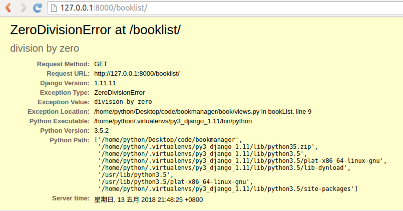

配置文件
1. BASE_DIR
BASE_DIR = os.path.dirname(os.path.dirname(os.path.abspath(__file__)))
当前工程的根目录，Django会依此来定位工程内的相关文件，我们也可以使用该参数来构造文件路径。
2. DEBUG
调试模式，创建工程后初始值为True，即默认工作在调试模式下。
作用：
修改代码文件，程序自动重启
Django程序出现异常时，向前端显示详细的错误追踪信息，例如

而非调试模式下，仅返回Server Error (500)
注意：部署线上运行的Django不要运行在调式模式下，记得修改DEBUG=False和ALLOW_HOSTS。
3. 本地语言与时区
Django支持本地化处理，即显示语言与时区支持本地化。
本地化是将显示的语言、时间等使用本地的习惯，这里的本地化就是进行中国化，中国大陆地区使用简体中文，时区使用亚洲/上海时区，注意这里不使用北京时区表示。
初始化的工程默认语言和时区为英语和UTC标准时区
LANGUAGE_CODE = 'en-us' # 语言
TIME_ZONE = 'UTC' # 时区# 时区
将语言和时区修改为中国大陆信息
LANGUAGE_CODE = 'zh-Hans'
TIME_ZONE = 'Asia/Shanghai'